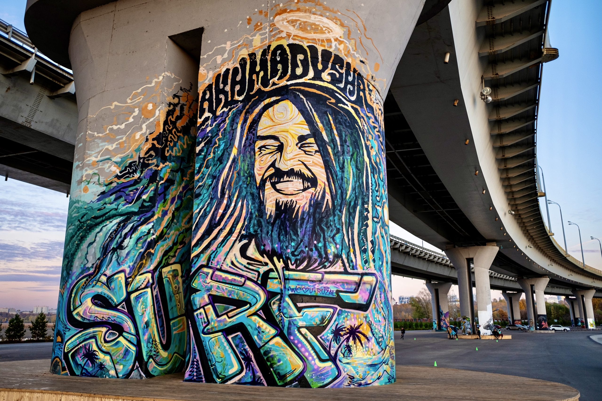
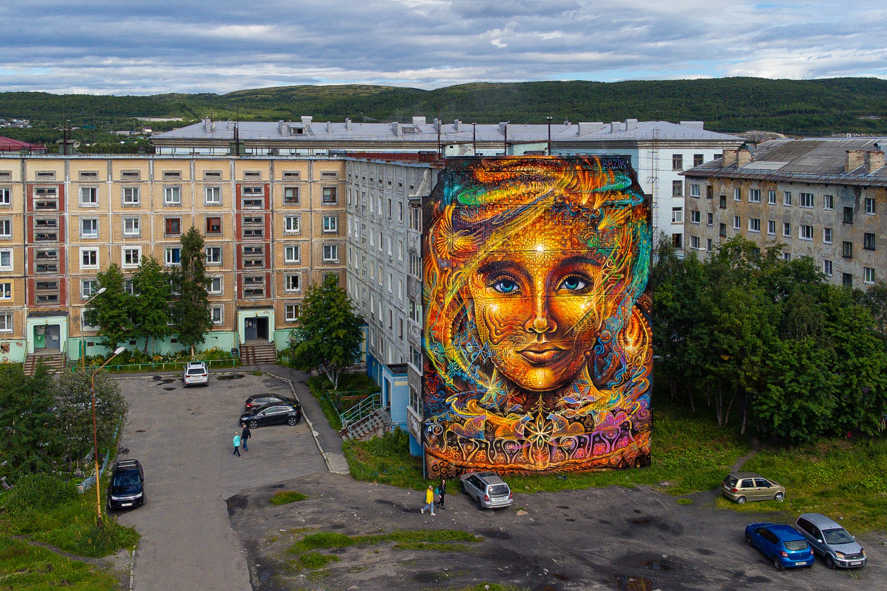
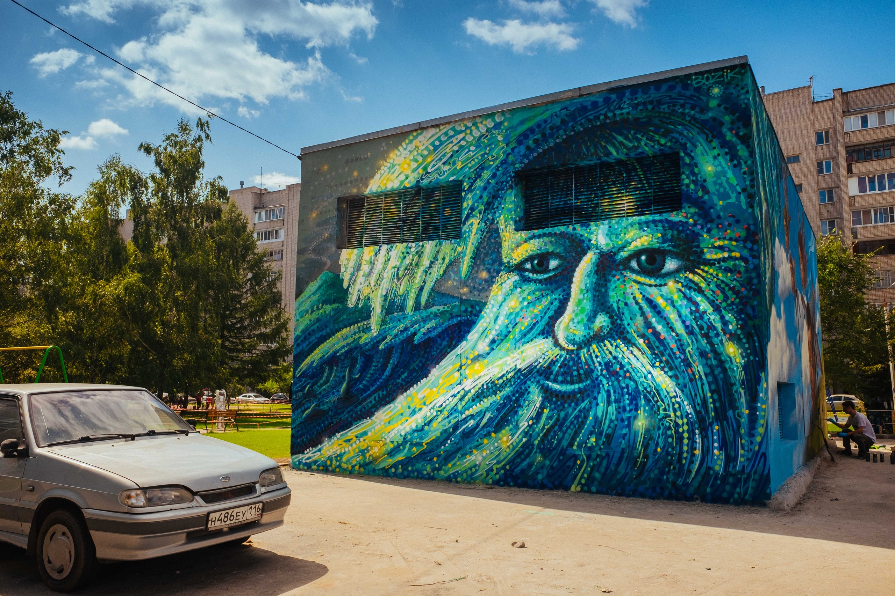
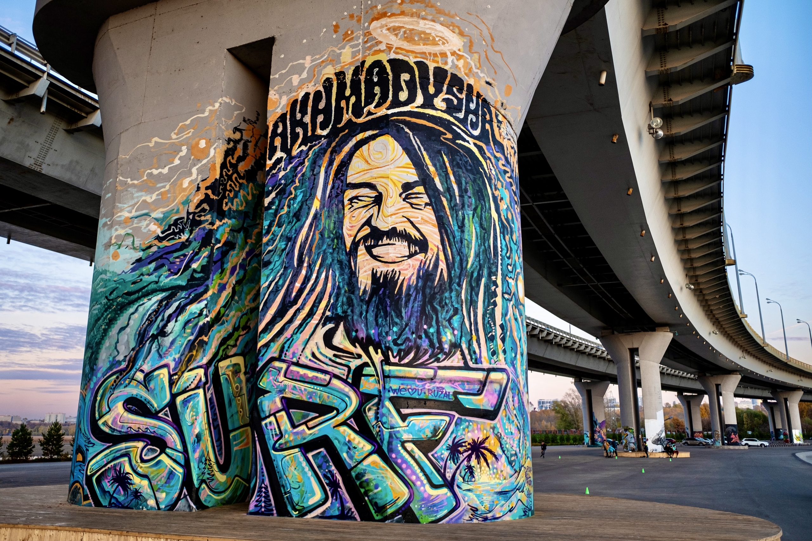
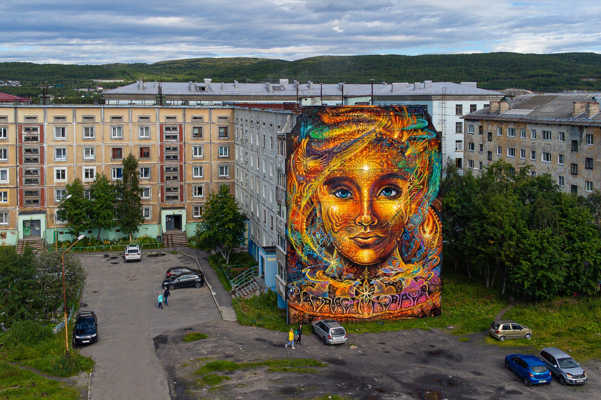
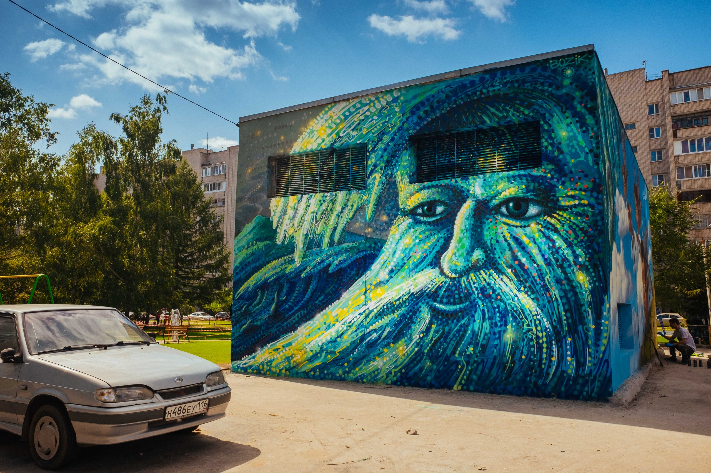

Рустам Кубик
Становление художника
Уличный художник родился в Республике Татарстан. В 2003 году переехал в Казань, где обучался в Казанском Художественном училище им. Фешина. Успешно занимался иллюстрацией, дизайном, граффити. После окончания обучения преподавал в детской Школе Дизайна и стал все больше времени посвящать работе на улицах. Шрифтовые композиции сменились сюрреалистичными сюжетами, в работах проявился новый стиль, в котором органично слились пастельные тона, плавные линии, растительные мотивы и необычные образы.
Творческий путь и признание
Работы Рустама впервые были представлены в 2013 году на его дебютной персональной выставке в московской галерее Street Kit. Вдохновленные жизнью, семьей, природой и книгами, образы Рустама несут в себе доступные каждому послания любви, знаний и духовности. Его творчество постепенно приобретало свой особый, сюрреалистический характер. Мечтательный и спокойный настрой его работ выделяет их среди прочих. Постоянно развивая свой визуальный язык и технику, художник активно работает как над масштабными муралами так и над холстами. Принимает участие в различных международных стрит-арт фестивалях, а также в благотворительных аукционах наряду с такими художниками как Swoon, Phlegm, Faile, Sandra Chevrier и многими другими. Работы художника из Казани можно встретить буквально по всей России. Его муралы украшают фасады в Казани, Алании (Северная Осетия), Балашихе, Нижневартовске, Иркутстке, Калининграде, Дербенте.
Галерея работ

 




